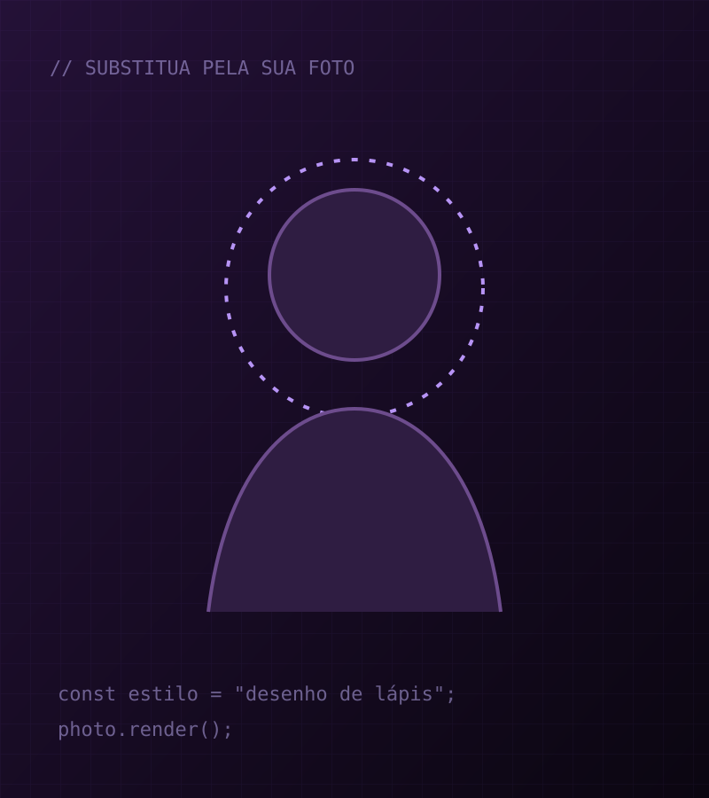

const desenvolvedor = {
Olá, eu sou Wilson Debus
Desenvolvedor de Software em formação
faculdade: Universidade Franciscana - UFN,
cidade: Santa Maria - RS,
trabalhoAtual: LED OUTDOOR Plugin Eventos
};
Mais informações... perfil.png
